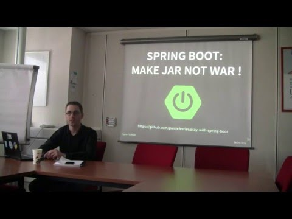
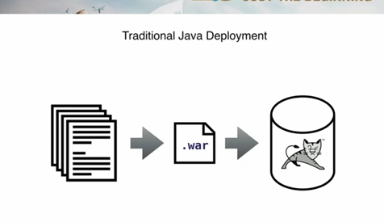
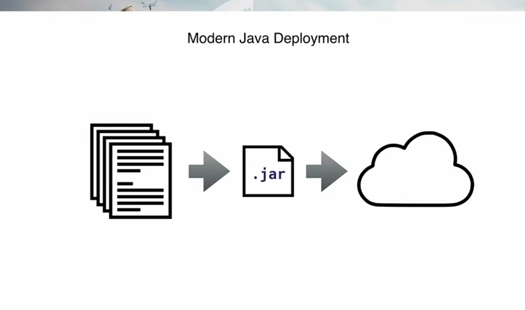
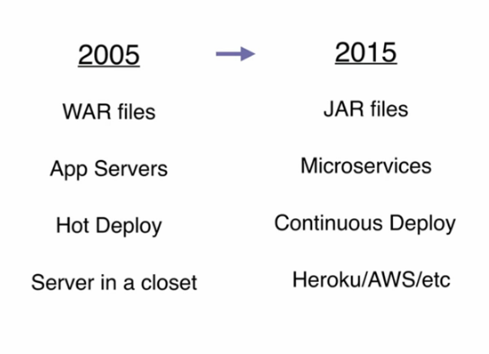
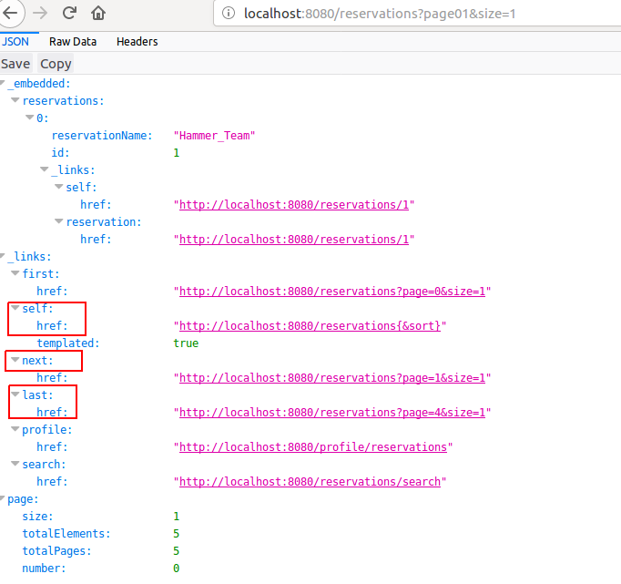
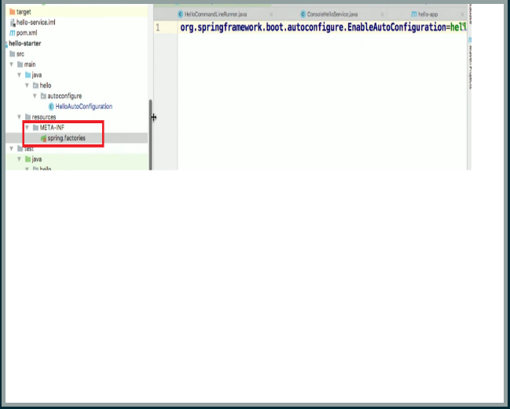
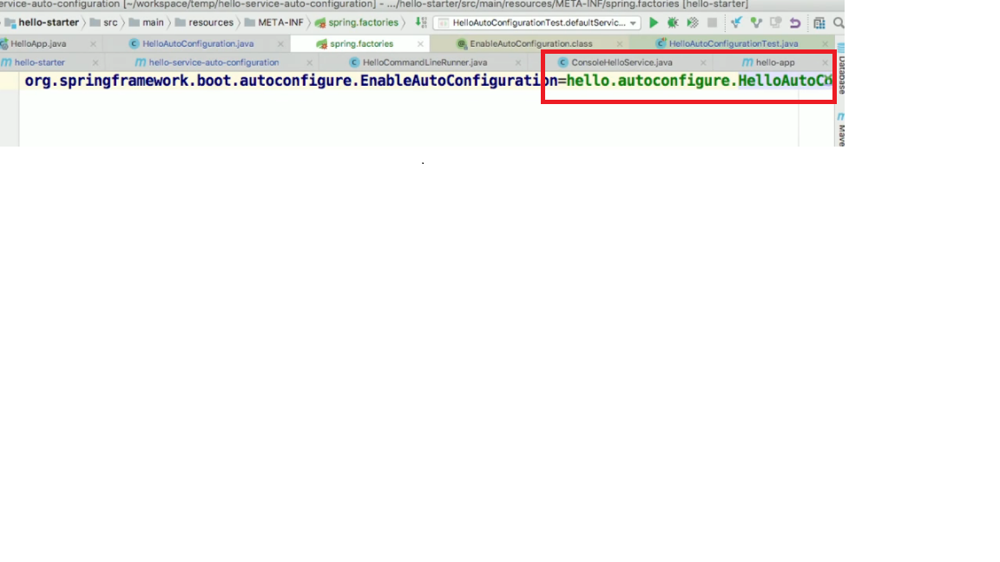
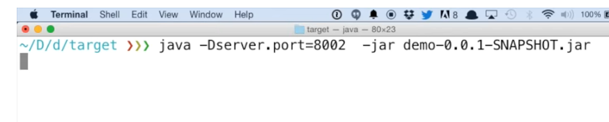
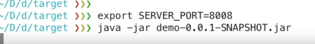

Buns....... Please help yourself :)
About me
I am Hari Rao. I work in Hammer Team
Today I am going to talk about

I will be covering
is Spring Boot?
- Spring Boot is a new framework from the team at Pivotal
- Spring is framework as we know. Boot is Bootstrap.
- Spring Boot lets you bootstrap a Spring application from scratch

Spring Boot?
- To provide a radically faster and widely accessible ‘getting started’ experience for all Spring development
- To be opinionated out of the box, but get out of the way quickly as requirements start to diverge from the defaults
- To provide a range of non-functional features that are common to large classes of projects (e.g. embedded servers, security, metrics, health checks, externalized configuration)
DEMO

-- Josh Long & Joe Kutner

Prior to cloud

Self contained jar, more Robust

Summarising ....
If you are interested to know more about this then you can take a look at Twelve-Factor App methodology.

This shows how to get to the next page, last page, current page etc. This format is called HAL Format which is an implementation of a design pattern called HATEOAS
Using ResourceProcessor the HAL info can be altered as you see the above profile-photo is added. It is as if every reservations have a profile picture.
@SpringBootApplication
@SpringBootConfiguration
@EnableAutoConfiguration
@ComponentScan

resources/META-INF/spring.factories



So the point is we can externally configure using
- application.properties
- Environment variable
- application.yml
- -D argument
- JNDI
So what have we got? We have got a Spring Boot application that
- Talks to a backend DB
- It has a repository
- It is handling transactions
- We have got a RestController
- We have got a MVC
- We can monitor the application
- We can integrate with Security like Stormpath etc
- We can override configurations externally
- Since it is a Jar, we can deploy it easily
I think that's the basics sort of covered
Recommended links to discover further on Spring Boot
- Getting Started with Spring Boot :- https://www.youtube.com/watch?v=sbPSjI4tt10 By Josh Long
- It's a Kind of Magic :- https://www.youtube.com/watch?v=jDchAEHIht0 By Brian Clozel, Stéphane Nicoll
- Test Driven Development with Spring Boot :- https://www.youtube.com/watch?v=s9vt6UJiHg4 By Sannidhi Jalukar, Madhura Bhave
- Google :)
I will try to answer